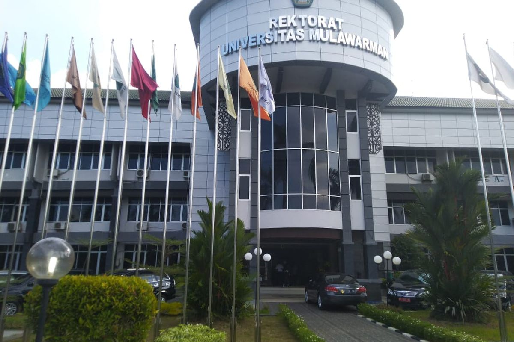
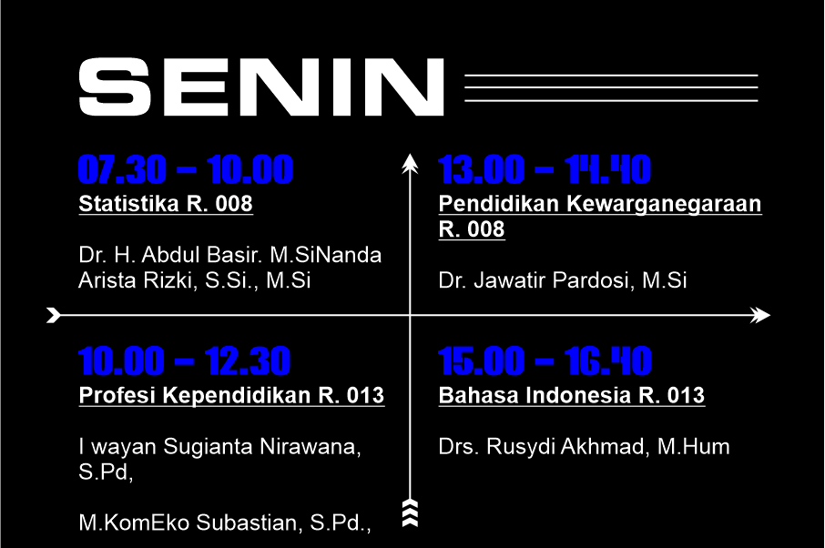

Universitas Mulawarman adalah universitas negeri yang berlokasi di Samarinda, Kalimantan Timur, Indonesia. Didirikan pada tanggal 27 September 1962, menjadikannya perguruan tinggi tertua di Kalimantan Timur.


Hari saya dibuka dengan mata kuliah statistika pada jam 7:30.
Dikarenakan jam 10 jadwal pak Wayan bertabrakan dengan kelas lain makan mata kuliah Profesi Kependidikan di ubah menjadi hari Kamis.